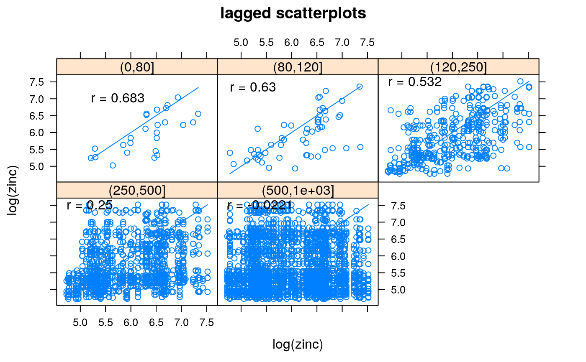

hscat.RdProduces h-scatterplots, where point pairs having specific separation distances are plotted. This function is a wrapper around xyplot.
hscat(formula, data, breaks, pch = 3, cex = .6, mirror = FALSE, variogram.alpha = 0, as.table = TRUE,...)
| formula | specifies the dependent variable |
|---|---|
| data | data where the variable in formula is resolved |
| breaks | distance class boundaries |
| pch | plotting symbol |
| cex | plotting symbol size |
| mirror | logical; duplicate all points mirrored along x=y? (note that correlations are those of the points plotted) |
| variogram.alpha | parameter to be passed as alpha parameter to variogram; if alpha is specified it will only affect xyplot by being passed through ... |
| as.table | logical; if |
| ... | parameters, passed to variogram and xyplot |
an object of class trellis; normally the h scatter plot
Data pairs are plotted once, so the h-scatterplot are not symmetric.
Pebesma, E.J., 2004. Multivariable geostatistics in S: the gstat package. Computers \& Geosciences, 30: 683-691.
library(sp) data(meuse) coordinates(meuse) = ~x+y hscat(log(zinc)~1, meuse, c(0, 80, 120, 250, 500, 1000))